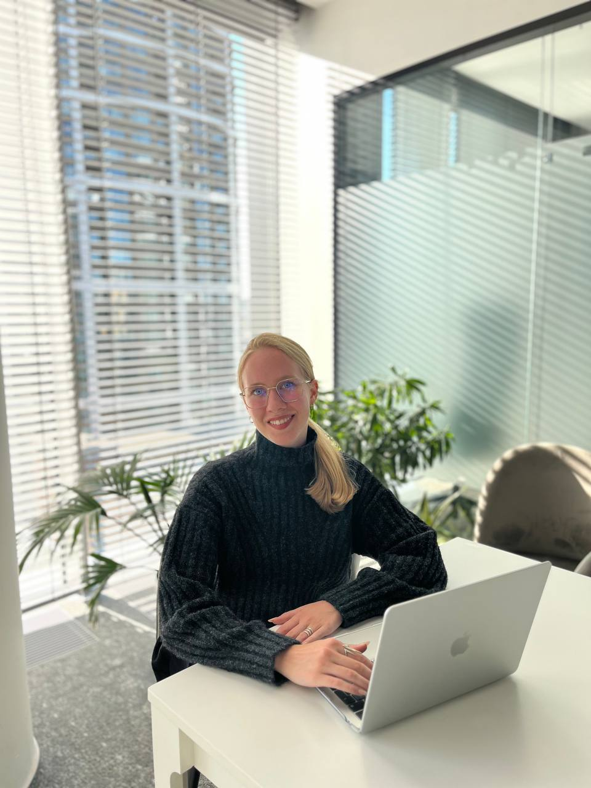

У державних вишах денна форма навчання словацькою мовою безкоштовна в межах стандартного терміну — для іноземних студентів на тих самих умовах, що й для словаків.
Дипломи визнаються в усьому ЄС
Словацький диплом діє в усіх країнах Євросоюзу без додаткового
підтвердження.
Дозвіл на проживання з правом на роботу
Студенти отримують офіційний статус, що дозволяє легально працювати і
подорожувати країнами ЄС під час навчання.
Словацька близька до української
Завдяки спорідненості мов дитині простіше досягти впевненого рівня, ніж у
вивченні мов з нуля без спільного коріння.
Спокійне і безпечне середовище
Словаччина відома низьким рівнем злочинності та стабільним щоденним життям
для студентів.
Чому ми?
Навчайтесь словацької з досвідченими викладачами, які роблять акцент на практичних розмовних навичках.
Інтерактивні уроки адаптовані до вашого рівня та розкладу — ви досягнете мети швидко і впевнено.
Що кажуть студенти та батьки
Ціни на заняття
Оберіть формат, що підходить вашому темпу та бюджету.
Залиште контакт — куратор SlovakLab розповість, з чого
почати підготовку саме для вашої дитини.
Безкоштовна консультація з куратором
Мовна підготовка від A1 до C1
Супровід вступу — від заявки до гуртожитку
Дякуємо! Ми зв'яжемось із вами найближчим часом.
Засновниця
Людина, що стоїть за SlovakLab.

Ірина Бріцова
Засновниця
I believe that language is a key to new opportunities, which is why we offer courses that
help you speak Slovak with confidence, understand local traditions and culture, and adapt to life with
native speakers. Our courses are tailored to the requirements of higher education in Slovakia and include
thematic lessons related to student life.
Comenius University
Вища освіта у Словаччині — ближче, ніж здається
Державні виші Словаччини відкриті для випускників з України. Ми беремо на себе мовну підготовку та організаційні питання, щоб ваша дитина могла зосередитись на навчанні.
Навчаємо словацької з нуля до рівня, потрібного для вступу (B1–C1)
Поєднуємо уроки з українськими викладачами та носіями мови
Допомагаємо обрати виш і факультет під цілі дитини
Готуємо й перевіряємо документи для вступу
Супроводжуємо від подання заявки до поселення в гуртожиток
Для активних і спортивних. Теорії менше, ніж на інших напрямах.
Оцінки складності — експертна думка SlovakLab для українського абітурієнта, який вчиться словацькою мовою. Конкурс і умови вступу відрізняються між університетами (у Братиславі зазвичай складніше, ніж у регіонах) і можуть змінюватися щороку. Актуальні умови — на сайті факультету в розділі «Prijímacie konanie».
Так! Ми пропонуємо індивідуальні заняття (15€/урок), парні заняття (75€/8 занять) та
групи до 6 осіб (50€/8 занять). Оберіть формат, який підходить саме вам.
Які вікові групи ви навчаєте?
Ми пропонуємо курси як для дорослих, так і для дітей-підлітків (13+ років). Заняття
проводяться у вікових групах, щоб забезпечити комфортне навчальне середовище.
Який розклад занять?
Розклад узгоджується разом з усією групою та викладачем, щоб максимально підходив усім
учасникам.
Скільки триває урок?
Урок триває 90 хвилин.
Який спосіб оплати за заняття?
Оплата здійснюється наперед: за 4 уроки або за повний місяць відповідно до
розкладу.
Хто ваші викладачі?
У нас викладають кваліфіковані викладачі словацької мови. Ось що їх об'єднує:
Профільна освіта.Фахова підготовка та практичний досвід роботи з іноземцями.
Досвід у Словаччині.Частина викладачів співпрацює з університетами або викладала в освітніх установах Словаччини.
Ретельний відбір.Для нас важливі не лише знання, а й уміння пояснювати складне просто, підтримувати студентів і працювати на результат.
Наша мета: щоб ви не просто вивчили граматику, а почувалися впевнено в реальному спілкуванні та навчанні словацькою мовою.
Чи можна вступити до державного вишу без вступних іспитів?
Частина державних вишів Словаччини зараховує за результатами атестата — конкретні
умови залежать від факультету, тому ми допомагаємо перевірити їх заздалегідь.
Чи визнається словацький диплом в Україні та ЄС?
Так, словацький диплом визнається в усіх країнах ЄС; для визнання в Україні потрібна
процедура нострифікації.
Чи можна поєднувати навчання з роботою?
Так, студентський статус у Словаччині дозволяє офіційно працювати під час навчання
на умовах, визначених законодавством країни.
Скільки часу займає підготовка до вступу?
Це залежить від початкового рівня словацької та обраного вишу — зазвичай мовна
підготовка триває від кількох місяців до року.
Вони допомагають нам розуміти, що на сайті працює, і показувати доречну рекламу. Ви можете погодитися на все, залишити лише необхідні або вибрати самостійно.Детальніше